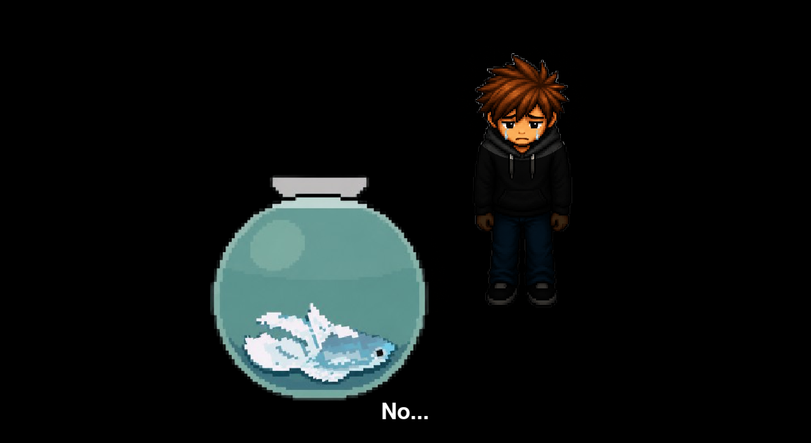

THE BASEMENT
🎵 COLLECTED EVIDENCE
Three vinyl records recovered. The truth is within reach.
MICHAEL JACKSON
VINYL
✓ COLLECTED
BILLY JOEL
VINYL
✓ COLLECTED
KATY PERRY
VINYL
✓ COLLECTED
📋 MISSION BRIEF
You descend into the basement with three vinyl records, a pocket full of evidence, and a growing sense of dread. This is where it all ends. The basement door has been locked for weeks — but you finally have the key.
What you find inside is not what you expected. The basement walls bear witness to the tragic incident. Poor Patrick. No... It can't be... Patrick belly up in a small desolate tank in the centre of the cold stark room.
Jarry is a villain. The "mystery" of Patrick's disappearance was an act of neglect and pure malevolence.
🗺️ LEVEL MAP

🎯 OBJECTIVES
- Play all three vinyl records on the record player to unlock the door
- Locate Patrick's tank in the basement
- Confront Jarry with the full evidence collection
💡 TIPS & TRICKS
- Play the vinyl records in order: MJ → Billy Joel → Katy Perry
📝 DEV NOTES
Here are some of the challenges we faced while developing the final level:
- Water pipes bursting in the workplace lead to unexpected delays and complications in communication with the team when working from home.
- Designing the emotional climax of the game to a tea.
- Necessary extracurricular activities for team brainstorming sessions.
🎬 THE ENDING
CASE CLOSED
The family returns home to find Jarry in the basement, sitting quietly beside Patrick's tank, playing old records on a worn-out player. The look on your face says everything: grief, despair, and a desperate wish that his bestfriend was still here.
Patrick is returned to your house. You host a sentimental memorial to remember your beloved companion Patrick. Jarry finally tells the truth and for the first time in weeks, the house feels empty.
"Some mysteries can't be solved."